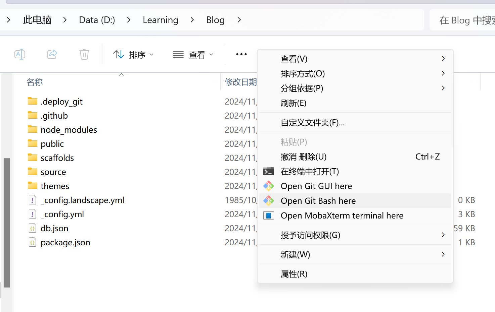

如何利用hexo在GitHub上搭建自己的个人博客
前言
我想应该没有人能拒绝能拥有一个自己的网站的机会吧。欸，那我这篇文章就刚好合适是一个低配版解决法案。其实我很早
之前就有搭一个博客的想法了，奈何太难了v……v。刚好前几天发现一个用hexo和GitHub搭建静态博客（应该是静态吧），我就
跟着教程尝试了一下，没想到真的弄好了基本弄好了。
环境安装
首先跟着教程把基本环境安装好，注意安装cnpm的淘宝镜像已经
过期了，我用的这个：
npm install -g cnpm –registry=https://registry.npmmirror.com
初始化
有了初始环境后，新一个文件夹Blog–用于存放你的博客相关文件。在这个文件夹中右键，选择使用Open Git Bash here。
注意：你要保证这是一个空的文件夹，我这里只是创建后的截图。
然后在弹出的终端使用
hexo init
如同教程博主说的一样到 Install dependencies 的时候你可能会卡住，然后按Ctrl + c就可以结束命令，接着使用
让国内镜像帮你完成初始化。
cnpm install
模板使用
初始化完成后，可以执行 hexo s 在本地部署你的博客，这个命令会提示你打开这个网址 http://localhost:4000/
你打开就能看见一个halloword网页，这只是你本地的，别人看不见且但你中断 hexo s后你也看不见。
你可以通过更改Blog下的_config.yml配置文件来改变你网页的一些设置，更多请自行搜索。当然 halloword网页可能
有点单调。我们可以从网上使用别人的模板来让我们的博客变得更好看，每个主题都有教程。
在使用的过程中请详细查看它们，我大部分问题的出在这上面。
部署在Github上
首先你需要创建一个仓库，仓库名必须是用户名 + .github.io，然后你需要创建一个git秘钥，然后更改_config.yml配置
文件中的display部分。后面再写